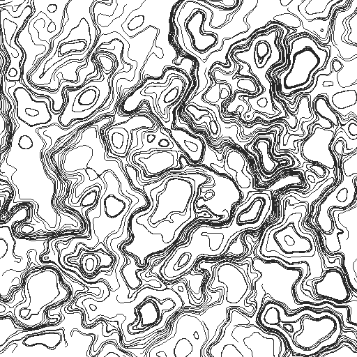
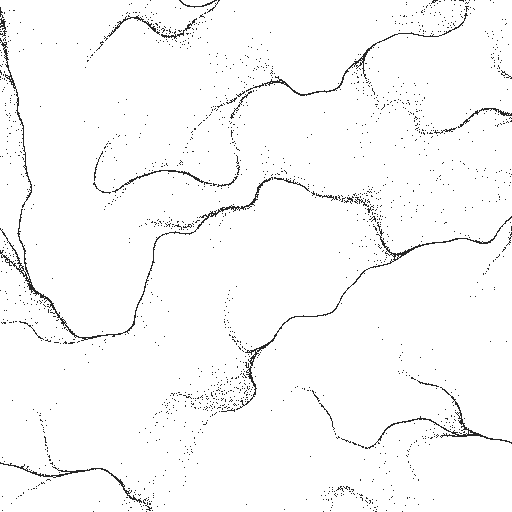
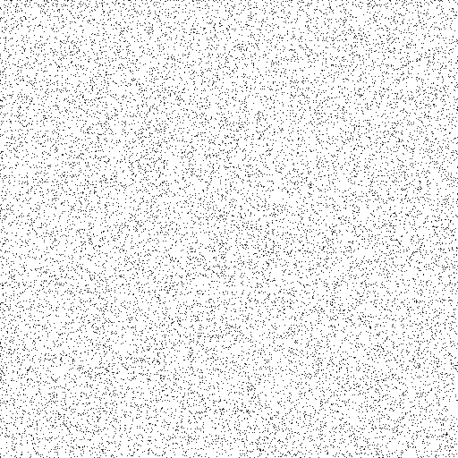

ノイズを使った表現
パーリンノイズを自作する
noise や perlin-noise といった専用ライブラリを使わず、NumPy だけを使ってパーリンノイズを実装する。仕組みを理解しておくと、1 次元・3 次元への拡張や、独自の変種（ドメインワーピングなど）を作るときに応用が利く。
アルゴリズムの概要は次の通り。
平面を整数格子に区切り、各格子点にランダムな勾配ベクトルを割り当てる。
評価したい点が属する格子セルの 4 隅について、格子点から評価点までの変位ベクトルと、その格子点の勾配ベクトルとの内積を取る。
内積を、5 次のイージング関数（fade 関数）で重み付けしたバイリニア補間で合成し、1 点のノイズ値を得る。
fade 関数には次式を用いる。これは補間とイージング関数で扱う smootherstep と同じ式で、単純な線形補間と違い、両端で 1 階・2 階微分が 0 になるため、格子の継ぎ目にムラが出ない。
実装（NumPy でベクトル化）
1"""NumPy を用いた自前の2Dパーリンノイズ実装。
2
3外部のノイズ専用ライブラリには頼らず、Ken Perlin の
4"Improving Noise" (2002) で示された改良版アルゴリズムを
5ベクトル化して実装している。
6
7アルゴリズムの流れ:
8
91. 平面を整数格子に区切り、各格子点に固定のランダムな勾配ベクトルを割り当てる
10 （実際には勾配ベクトルの集合と、座標をその集合の添字に変換するための
11 ハッシュ用の並び替えテーブル ``perm`` を用意する）。
122. 評価したい座標が属する格子セルの4隅について、格子点から座標までの
13 変位ベクトルと勾配ベクトルの内積を取る。
143. 4つの内積値を、なめらかな補間曲線（fade関数）を使ったバイリニア補間で
15 合成し、1点のノイズ値を得る。
16"""
17
18import numpy as np
19
20# 2Dで使用する8方向の勾配ベクトル。
21_GRADIENTS: np.ndarray = np.array(
22 [
23 [1, 1], [-1, 1], [1, -1], [-1, -1],
24 [1, 0], [-1, 0], [0, 1], [0, -1],
25 ],
26 dtype=float,
27)
28
29
30def make_permutation(seed: int | None = None) -> np.ndarray:
31 """0-255 をシャッフルした並び替えテーブルを、長さ512に複製して返す。
32
33 座標を勾配ベクトルの添字に変換する際のハッシュ関数として使う。
34 末尾で格子座標が +1 されてもインデックスが配列範囲を超えないよう、
35 テーブルを2つ連結しておく（ラップアラウンドの簡易実装）。
36 """
37 rng: np.random.Generator = np.random.default_rng(seed)
38 perm: np.ndarray = np.arange(256, dtype=np.int64)
39 rng.shuffle(perm)
40 return np.concatenate([perm, perm])
41
42
43def _fade(t: np.ndarray) -> np.ndarray:
44 """5次のイーズ曲線 6t^5 - 15t^4 + 10t^3 。
45
46 両端で1階・2階微分が0になり、格子の継ぎ目が滑らかにつながる。
47 """
48 return t * t * t * (t * (t * 6 - 15) + 10)
49
50
51def _lerp(t: np.ndarray, a: np.ndarray, b: np.ndarray) -> np.ndarray:
52 return a + t * (b - a)
53
54
55def _gradient_dot(
56 hash_value: np.ndarray, x: np.ndarray, y: np.ndarray
57) -> np.ndarray:
58 """ハッシュ値から勾配ベクトルを選び、変位ベクトル (x, y) との内積を返す。"""
59 g: np.ndarray = _GRADIENTS[hash_value & 7]
60 return g[..., 0] * x + g[..., 1] * y
61
62
63def perlin2d(x: np.ndarray, y: np.ndarray, perm: np.ndarray) -> np.ndarray:
64 """座標配列 x, y (任意の同じ形状) に対するパーリンノイズ値を返す。
65
66 値のレンジはおおよそ -1〜1 に収まる。
67 """
68 xi: np.ndarray = np.floor(x).astype(np.int64) & 255
69 yi: np.ndarray = np.floor(y).astype(np.int64) & 255
70 xf: np.ndarray = x - np.floor(x)
71 yf: np.ndarray = y - np.floor(y)
72
73 u: np.ndarray = _fade(xf)
74 v: np.ndarray = _fade(yf)
75
76 # 格子セルの4隅のハッシュ値
77 aa: np.ndarray = perm[perm[xi] + yi]
78 ab: np.ndarray = perm[perm[xi] + yi + 1]
79 ba: np.ndarray = perm[perm[xi + 1] + yi]
80 bb: np.ndarray = perm[perm[xi + 1] + yi + 1]
81
82 # 各隅について、勾配ベクトルと変位ベクトルの内積を計算
83 x1: np.ndarray = _lerp(
84 u, _gradient_dot(aa, xf, yf), _gradient_dot(ba, xf - 1, yf)
85 )
86 x2: np.ndarray = _lerp(
87 u, _gradient_dot(ab, xf, yf - 1), _gradient_dot(bb, xf - 1, yf - 1)
88 )
89 return _lerp(v, x1, x2)
90
91
92def fbm2d(
93 x: np.ndarray,
94 y: np.ndarray,
95 perm: np.ndarray,
96 octaves: int = 4,
97 persistence: float = 0.5,
98 lacunarity: float = 2.0,
99) -> np.ndarray:
100 """複数のオクターブを重ね合わせた fBm (fractal Brownian motion)。
101
102 周波数を ``lacunarity`` 倍、振幅を ``persistence`` 倍しながら
103 ``octaves`` 回パーリンノイズを重ね、より複雑なディテールを加える。
104 """
105 total: np.ndarray = np.zeros_like(x, dtype=float)
106 amplitude: float = 1.0
107 frequency: float = 1.0
108 max_amplitude: float = 0.0
109
110 for _ in range(octaves):
111 total += amplitude * perlin2d(x * frequency, y * frequency, perm)
112 max_amplitude += amplitude
113 amplitude *= persistence
114 frequency *= lacunarity
115
116 return total / max_amplitude
117
118
119# 各ワープ段で q, r 用のノイズを評価する際に足しこむオフセット。
120# 適当に離れた値にすることで、複数回評価するノイズどうしの相関を薄める。
121_WARP_OFFSETS: np.ndarray = np.array(
122 [
123 [0.0, 0.0],
124 [5.2, 1.3],
125 [1.7, 9.2],
126 [8.3, 2.8],
127 [4.1, 6.6],
128 [2.9, 7.4],
129 ]
130)
131
132
133def domain_warp2d(
134 x: np.ndarray,
135 y: np.ndarray,
136 perm: np.ndarray,
137 octaves: int = 4,
138 persistence: float = 0.5,
139 lacunarity: float = 2.0,
140 warp_strength: float = 4.0,
141 iterations: int = 2,
142) -> np.ndarray:
143 """ドメインワーピング: fBmの評価座標そのものをノイズで歪める。
144
145 通常の fBm ``fbm(p)`` に対し、まず座標をずらすためのベクトル場
146 ``q(p) = (fbm(p + o0), fbm(p + o1))`` をノイズから作り、
147 ``fbm(p + warp_strength * q(p))`` を評価する。これを繰り返し適用する
148 （``iterations`` 回）ことで、格子状のfBmだけでは出せない、渦を巻いた
149 ような有機的な模様が得られる（Inigo Quilez, "Domain Warping"）。
150 """
151 warped_x: np.ndarray = x
152 warped_y: np.ndarray = y
153
154 for i in range(iterations):
155 offset_a: np.ndarray = _WARP_OFFSETS[(2 * i) % len(_WARP_OFFSETS)]
156 offset_b: np.ndarray = _WARP_OFFSETS[(2 * i + 1) % len(_WARP_OFFSETS)]
157
158 qx: np.ndarray = fbm2d(
159 warped_x + offset_a[0], warped_y + offset_a[1],
160 perm, octaves, persistence, lacunarity,
161 )
162 qy: np.ndarray = fbm2d(
163 warped_x + offset_b[0], warped_y + offset_b[1],
164 perm, octaves, persistence, lacunarity,
165 )
166
167 warped_x = x + warp_strength * qx
168 warped_y = y + warp_strength * qy
169
170 return fbm2d(warped_x, warped_y, perm, octaves, persistence, lacunarity)
171
172
173def main() -> None:
174 from PIL import Image
175
176 width: int = 512
177 height: int = 512
178 scale: float = 0.02
179
180 xs: np.ndarray
181 ys: np.ndarray
182 xs, ys = np.meshgrid(
183 np.arange(width, dtype=float), np.arange(height, dtype=float)
184 )
185 perm: np.ndarray = make_permutation(seed=0)
186
187 def save_grayscale(values: np.ndarray, path: str) -> None:
188 normalized: np.ndarray = ((values + 1) / 2 * 255).clip(0, 255)
189 Image.fromarray(normalized.astype(np.uint8), mode="L").save(path)
190
191 fbm_values: np.ndarray = fbm2d(xs * scale, ys * scale, perm, octaves=5)
192 save_grayscale(fbm_values, "perlin_noise.png")
193
194 warped_values: np.ndarray = domain_warp2d(
195 xs * scale, ys * scale, perm, octaves=5, warp_strength=4.0
196 )
197 save_grayscale(warped_values, "domain_warp.png")
198
199
200if __name__ == "__main__":
201 main()
生成される画像はこのようになる。

基本の perlin2d に加えて、周波数と振幅を変えながら重ね合わせる fbm2d（fractal Brownian motion）も実装している。オクターブ数を増やすほど、大きなうねりの上に細かいディテールが乗った複雑な模様になる。
1import numpy as np
2from perlin_noise import fbm2d, make_permutation
3
4perm: np.ndarray = make_permutation(seed=1)
5xs: np.ndarray
6ys: np.ndarray
7xs, ys = np.meshgrid(
8 np.arange(400, dtype=float), np.arange(400, dtype=float)
9)
10values: np.ndarray = fbm2d(
11 xs * 0.02, ys * 0.02, perm, octaves=5, persistence=0.5
12)
ドメインワーピング
fBm をそのまま画像にすると、雲やまだら模様のようにはなるものの、どうしても「格子の上にノイズを乗せた」ような単調さが残る。ドメインワーピング（domain warping）は、ノイズを評価する座標そのものを、別のノイズから作ったベクトル場でずらしてから評価する手法で、渦を巻いたような有機的な模様を作れる（Inigo Quilez, "Domain Warping"）。
考え方はシンプルで、まず座標をずらす量（ワープベクトル）を、入力座標にオフセットを加えた位置で評価した fBm から作る。
ここで \(o_0, o_1\) は互いに離れた適当な定数オフセット（同じノイズ場を使い回しても座標が違えば無相関に近い値になる）、\(k\) はワープの強さを決める係数である。これを複数回繰り返し適用する（歪めた座標でさらに次のワープ用ベクトル場を作る）ことで、より複雑な渦模様が得られる。
1def domain_warp2d(
2 x: np.ndarray,
3 y: np.ndarray,
4 perm: np.ndarray,
5 octaves: int = 4,
6 persistence: float = 0.5,
7 lacunarity: float = 2.0,
8 warp_strength: float = 4.0,
9 iterations: int = 2,
10) -> np.ndarray:
11 """ドメインワーピング: fBmの評価座標そのものをノイズで歪める。
12
13 通常の fBm ``fbm(p)`` に対し、まず座標をずらすためのベクトル場
14 ``q(p) = (fbm(p + o0), fbm(p + o1))`` をノイズから作り、
15 ``fbm(p + warp_strength * q(p))`` を評価する。これを繰り返し適用する
16 （``iterations`` 回）ことで、格子状のfBmだけでは出せない、渦を巻いた
17 ような有機的な模様が得られる（Inigo Quilez, "Domain Warping"）。
18 """
19 warped_x: np.ndarray = x
20 warped_y: np.ndarray = y
21
22 for i in range(iterations):
23 offset_a: np.ndarray = _WARP_OFFSETS[(2 * i) % len(_WARP_OFFSETS)]
24 offset_b: np.ndarray = _WARP_OFFSETS[(2 * i + 1) % len(_WARP_OFFSETS)]
25
26 qx: np.ndarray = fbm2d(
27 warped_x + offset_a[0], warped_y + offset_a[1],
28 perm, octaves, persistence, lacunarity,
29 )
30 qy: np.ndarray = fbm2d(
31 warped_x + offset_b[0], warped_y + offset_b[1],
32 perm, octaves, persistence, lacunarity,
33 )
34
35 warped_x = x + warp_strength * qx
36 warped_y = y + warp_strength * qy
37
38 return fbm2d(warped_x, warped_y, perm, octaves, persistence, lacunarity)
同じ perm・同じスケールで fbm2d と domain_warp2d を比べると、後者は等高線のような縞が渦を巻き、大理石調の模様になる。

warp_strength を大きくするほど渦が強く歪み、iterations を増やすほど渦の中にさらに渦が入れ子になった、より複雑な模様になる。両方とも大きくしすぎると、元の座標との対応が失われてノイズ状のざらつきに戻ってしまう点には注意する。
Worley ノイズ（セルラーノイズ）
パーリンノイズは、格子点に割り当てた勾配をなめらかに補間するノイズだった。これとは異なる発想のノイズとして、Steven Worley が 1996 年に提案した Worley ノイズ（セルラーノイズとも呼ぶ）がある。平面に散らした特徴点までの距離をノイズの値として使うもので、細胞・泡・石畳・ひび割れのような、境界で区切られた模様を作るのに向く。
特徴点は、平面を正方形のマスに区切り、各マスに 1 つずつランダムな位置に置く。評価する点について、もっとも近い特徴点までの距離を \(F_1\)、2 番目に近い特徴点までの距離を \(F_2\) とし、これらの値やその組み合わせをノイズとして使う。
特徴点をマスごとに 1 つずつ置いておくと、近い特徴点を探すときに、全ての特徴点を調べる必要がなくなる。本実装では、評価点が属するマスとその周囲 8 マスにある計 9 個の特徴点だけを調べている。厳密には、この 9 個より外側の特徴点のほうが近い場合もあるが、まれであり、模様への影響は目立たない（作例では、\(F_1\) は全ての画素で厳密な値と一致し、\(F_2\) がずれた画素は全体の 0.02% 未満だった）。また、特徴点の配列を端で折り返して参照しているため、模様は上下左右に継ぎ目なくつながる。
1def make_feature_points(
2 cells: int, rng: np.random.Generator
3) -> np.ndarray:
4 """``cells`` x ``cells`` のマスそれぞれに置く特徴点の、マス内での位置。
5
6 戻り値は形状 (cells, cells, 2) の配列で、値は 0.0-1.0。
7 """
8 return rng.random((cells, cells, 2))
1def worley2d(
2 x: np.ndarray, y: np.ndarray, features: np.ndarray
3) -> tuple[np.ndarray, np.ndarray]:
4 """座標 (x, y) (マス単位)における Worley ノイズの F1 と F2 を返す。
5
6 評価点が属するマスと、その周囲 8 マスの計 9 個の特徴点までの
7 距離を求め、小さいほうから2つを F1・F2 とする。特徴点の配列は
8 端で折り返して参照するため、生成される模様は上下左右に継ぎ目なく
9 つながる。
10 """
11 cells: int = features.shape[0]
12 ix: np.ndarray = np.floor(x).astype(np.int64)
13 iy: np.ndarray = np.floor(y).astype(np.int64)
14 distances: list[np.ndarray] = []
15 for dy in (-1, 0, 1):
16 for dx in (-1, 0, 1):
17 cx: np.ndarray = ix + dx
18 cy: np.ndarray = iy + dy
19 offset: np.ndarray = features[cy % cells, cx % cells]
20 fx: np.ndarray = cx + offset[..., 0]
21 fy: np.ndarray = cy + offset[..., 1]
22 distances.append(np.hypot(x - fx, y - fy))
23
24 nearest: np.ndarray = np.sort(np.stack(distances), axis=0)
25 return nearest[0], nearest[1]
\(F_1\) をそのまま画像にすると、特徴点の位置が暗く、そこから離れるほど明るくなる、泡や細胞が並んだような模様になる（左）。\(F_1\) を与える特徴点ごとに平面を塗り分けると、距離関数による形状表現で扱うボロノイ図そのものになる。一方 \(F_2 - F_1\) は、2 つの特徴点から等しい距離にある点、つまりボロノイ図の境界で 0 になるため、境界が暗い線として浮かび上がる網目模様になる（右）。


Worley ノイズもパーリンノイズと同じく「座標を受け取って値を返す関数」なので、前節のドメインワーピングと組み合わせられる。評価する座標を fbm2d でずらしてから \(F_2 - F_1\) を求めると、直線だった境界が波打ち、生物の細胞や乾いた地面のひび割れのような有機的な模様になる。

フローフィールド
ノイズ値をそのまま画像にする以外に、座標ごとの角度に変換してベクトル場（フローフィールド）として使う方法がある。各点に「その場所での風向き」のような方向を割り当て、多数のパーティクルをその方向に少しずつ動かして軌跡を残すと、水の流れや風になびく髪の毛のような、有機的な曲線群が得られる。
fbm の値はおおよそ \(-1\)〜\(1\) の範囲なので、\(n\) 回転分の角度 \(\theta\) にスケールする。\(n\) を大きくするほど、近くのパーティクルでも進行方向が大きく変わる、渦の細かいフィールドになる。
各パーティクルの位置更新は、その位置での角度方向に一定の歩幅 step_length だけ進む単純なオイラー法である。
1"""パーリンノイズによるフローフィールド上のパーティクル軌跡描画。
2
3ノイズ値を角度に変換してベクトル場（フローフィールド）を作り、
4多数のパーティクルをその場に沿って移動させることで、水の流れや
5風のような曲線群を描く。
6"""
7
8import numpy as np
9from PIL import Image, ImageDraw
10
11from perlin_noise import fbm2d, make_permutation
12
13
14def flow_angles(
15 x: np.ndarray,
16 y: np.ndarray,
17 perm: np.ndarray,
18 scale: float,
19 rotations: float = 2.0,
20) -> np.ndarray:
21 """座標 x, y におけるフローフィールドの角度（ラジアン）を返す。
22
23 fBm の値（おおよそ -1〜1）を、``rotations`` 回転分の角度に
24 マッピングする。値を大きくするほど渦が細かく複雑になる。
25 """
26 noise_values: np.ndarray = fbm2d(x * scale, y * scale, perm, octaves=3)
27 return noise_values * rotations * np.pi
28
29
30def simulate_particles(
31 width: int,
32 height: int,
33 perm: np.ndarray,
34 num_particles: int = 400,
35 num_steps: int = 200,
36 step_length: float = 2.0,
37 noise_scale: float = 0.01,
38 seed: int = 0,
39) -> np.ndarray:
40 """パーティクルをフローフィールドに沿って移動させ、軌跡を返す。
41
42 戻り値は形状 ``(num_steps + 1, num_particles, 2)`` の座標配列。
43 各パーティクルの移動は、その時点の位置におけるフィールドの角度
44 方向に、一定の歩幅 ``step_length`` だけ進む単純なオイラー法。
45 """
46 rng: np.random.Generator = np.random.default_rng(seed)
47 positions: np.ndarray = rng.uniform(
48 low=[0.0, 0.0],
49 high=[float(width), float(height)],
50 size=(num_particles, 2),
51 )
52
53 trail: np.ndarray = np.empty((num_steps + 1, num_particles, 2))
54 trail[0] = positions
55
56 for step in range(num_steps):
57 angles: np.ndarray = flow_angles(
58 positions[:, 0], positions[:, 1], perm, noise_scale
59 )
60 direction: np.ndarray = np.stack(
61 [np.cos(angles), np.sin(angles)], axis=-1
62 )
63 positions = positions + direction * step_length
64 trail[step + 1] = positions
65
66 return trail
67
68
69def draw_trails(trail: np.ndarray, width: int, height: int) -> Image.Image:
70 """パーティクルの軌跡を線分として描画した画像を返す。
71
72 キャンバス外に出た座標も含めて渡してよい。Pillow は描画範囲外の
73 座標を自動的に切り詰めるため、追跡を打ち切る処理は不要。
74 """
75 img: Image.Image = Image.new("RGB", (width, height), "white")
76 draw: ImageDraw.ImageDraw = ImageDraw.Draw(img)
77
78 num_steps, num_particles, _ = trail.shape
79 for particle_index in range(num_particles):
80 points: list[tuple[float, float]] = [
81 (
82 float(trail[step, particle_index, 0]),
83 float(trail[step, particle_index, 1]),
84 )
85 for step in range(num_steps)
86 ]
87 draw.line(points, fill=(40, 40, 40), width=1)
88
89 return img
90
91
92def main() -> None:
93 width: int = 512
94 height: int = 512
95 perm: np.ndarray = make_permutation(seed=1)
96
97 trail: np.ndarray = simulate_particles(width, height, perm)
98 img: Image.Image = draw_trails(trail, width, height)
99 img.save("flow_field.png")
100
101
102if __name__ == "__main__":
103 main()
パーティクルの初期位置はキャンバス内に一様乱数で配置し、各ステップで現在位置におけるフィールドの角度を fbm2d で求めて進む。全パーティクル分の位置をまとめて (num_particles, 2) の配列として扱うことで、ステップごとの更新を Python のループではなく NumPy のベクトル演算で行っている。

パーティクルの初期位置は一様乱数で決めているが、軌跡は何本かの太い筋に寄り集まっている。フィールドの向きが周りから 1 か所へ向かって集まる場所（吸い込み口）があると、その周りのパーティクルが同じ筋に合流し、以後は同じ道をたどるためである。筋が枝分かれしながら合流する模様は、川の流れのような表現には向くが、画面全体を均一な流れで満たしたい場合には不向きである。これを解決するのが次節のカールノイズである。
カールノイズ
カールノイズ（curl noise）は、Robert Bridson らが 2007 年に提案した、流体のような流れをノイズから作る手法である。前節のフローフィールドとは違い、流れの中にパーティクルが集まる場所も散っていく場所もできない。
考え方
ノイズの値 \(\psi(x, y)\) を高さとみなすと、平面は山と谷のある地形になる。カールノイズでは、この地形の等高線に沿う向きを流れの向きとし、等高線が密な（傾きが急な）場所ほど速く流れるようにする。この向きと速さは、\(\psi\) の勾配（最も急に登る向き）を 90 度回すことで得られる。
この操作を回転（curl）と呼び、\(\psi\) を流れ関数と呼ぶ。こうして作った速度場 \(\mathbf{v}\) は、次の 2 つの性質を持つ。
発散が 0 になる。 発散は、ある点の周りで流れが湧き出す量（負ならば吸い込まれる量）を表す。偏微分の順序は入れ替えられるので、次式の通り、どの点でも発散は 0 になる。そのため、流れの中に吸い込み口も湧き出し口もできず、パーティクルの密度は流しても変わらない。
\[\frac{\partial v_x}{\partial x} + \frac{\partial v_y}{\partial y} = \frac{\partial^2 \psi}{\partial x \partial y} - \frac{\partial^2 \psi}{\partial y \partial x} = 0\]パーティクルは等高線の上を動く。 \(\mathbf{v}\) は \(\psi\) の勾配と直交するので、パーティクルが動いても \(\psi\) の値は変わらない。つまり、各パーティクルの軌跡は \(\psi\) の等高線そのものになる。
前節のフローフィールドは、ノイズの値を角度に変えたもので、発散が 0 になる保証がない。これが、パーティクルが筋に寄り集まる原因である。
実装
偏微分は、微小な幅 \(h\) だけ前後にずらした 2 点での値の差から求める（中心差分）。
流れ関数には、本章の前半で作った fbm2d をそのまま使う。
1def curl_velocity(
2 x: np.ndarray,
3 y: np.ndarray,
4 perm: np.ndarray,
5 scale: float,
6) -> np.ndarray:
7 """座標 x, y におけるカールノイズの速度ベクトルを返す。
8
9 fBm を流れ関数 psi とみなし、その回転
10 ``(d psi / dy, -d psi / dx)`` を速度とする。偏微分は中心差分で
11 近似する。戻り値は形状 ``x.shape + (2,)`` の配列。
12
13 ``scale`` を変えても速さが大きく変わらないよう、偏微分はノイズの
14 座標 (ピクセル座標に ``scale`` を掛けたもの) について求める。
15 速さの平均はおおよそ 1 になる。
16 """
17 h: float = _DIFF_STEP
18 u: np.ndarray = x * scale
19 v: np.ndarray = y * scale
20
21 def psi(pu: np.ndarray, pv: np.ndarray) -> np.ndarray:
22 # 流れ関数。
23 return fbm2d(pu, pv, perm, octaves=3)
24
25 dpsi_du: np.ndarray = (psi(u + h, v) - psi(u - h, v)) / (2 * h)
26 dpsi_dv: np.ndarray = (psi(u, v + h) - psi(u, v - h)) / (2 * h)
27 return np.stack([dpsi_dv, -dpsi_du], axis=-1)
パーティクルは、各ステップで現在位置の速度に speed を掛けた分だけ進める。前節のように速度の向きだけを取り出して歩幅を揃えると、発散が 0 の性質が失われるため、速度の大きさはそのまま使う。
また、位置の更新にはオイラー法ではなく中点法を使う。まず半歩だけ進んだ位置（中点）を求め、その中点での速度を使って元の位置から 1 歩進める方法である。オイラー法では、渦の周りを回るパーティクルが 1 ステップごとに少しずつ外側へずれていくため、長く流すと渦の中心に点のない穴ができる。
1def simulate_curl_particles(
2 positions: np.ndarray,
3 perm: np.ndarray,
4 num_steps: int,
5 speed: float,
6 noise_scale: float,
7) -> np.ndarray:
8 """パーティクルをカールノイズの速度場に沿って移動させ、軌跡を返す。
9
10 ``positions`` は形状 ``(num_particles, 2)`` の初期位置。戻り値は
11 形状 ``(num_steps + 1, num_particles, 2)`` の座標配列。速度の
12 大きさは場所によって異なるため、向きだけを取り出して歩幅を
13 揃えることはしない（揃えると発散が 0 の性質が失われる）。
14
15 位置の更新には中点法を使う。オイラー法では、渦の周りを回る
16 パーティクルが 1 ステップごとに少しずつ外側へずれていき、
17 渦の中心に点のない穴ができてしまうためである。
18 """
19 trail: np.ndarray = np.empty((num_steps + 1,) + positions.shape)
20 trail[0] = positions
21
22 for step in range(num_steps):
23 # 半歩だけ進んだ位置（中点）での速度を使って 1 歩進める。
24 velocity: np.ndarray = curl_velocity(
25 positions[:, 0], positions[:, 1], perm, noise_scale
26 )
27 midpoint: np.ndarray = positions + velocity * (speed / 2)
28 velocity = curl_velocity(
29 midpoint[:, 0], midpoint[:, 1], perm, noise_scale
30 )
31 positions = positions + velocity * speed
32 trail[step + 1] = positions
33
34 return trail
次の画像は、前節の flow_field.png と同じシード・同じスケールのノイズを流れ関数とし、400 個のパーティクルを 200 ステップ流した軌跡である。軌跡は筋に寄り集まらず、流れ関数の等高線に沿って閉じた曲線を描く。等高線が密な場所では軌跡の間隔が狭くなるため、全体として、地形図や大理石の模様のような濃淡が現れる。


密度が保たれることの確認
発散が 0 であることの効果は、多数の点を一様に散らしてから流すと分かりやすい。次の 2 枚は、同じ位置に散らした点を、前節の角度によるフローフィールド（1 枚目）とカールノイズ（2 枚目）で 60 ステップ流したあとの位置である。キャンバスの外からも点が流れ込むよう、キャンバスの周囲 200 ピクセルにも点を散らしている。




角度によるフローフィールドでは、点の大半が細い筋に集まり、ほかの場所はほとんど空白になる。一方、カールノイズでは、点は流れても画面全体にほぼ一様に分布したままである。煙・液体・星雲のように、画面を均一に満たしたまま渦を巻く表現にはカールノイズが向き、川の流れや毛並みのように筋がまとまる表現には角度によるフローフィールドが向く。
なお、本節の流れ関数は時間によって変わらないため、パーティクルは同じ等高線の上を回り続ける。より複雑な流れにしたい場合は、流れ関数を時間とともに変化させる（ノイズの座標に時刻に比例したずれを加える、3 次元のノイズの 3 つ目の座標に時刻を使う、など）とよい。流れ関数が時間で変わっても、各時刻の速度場の発散は 0 のままである。
その他のノイズ
本章ではパーリンノイズと Worley ノイズを実装したが、ジェネラティブアートやコンピュータグラフィックスでは、ほかにも多くのノイズが使われる。代表的なものと、本資料での扱いを次の表にまとめる。いずれも、本章の実装を少し変えるか、他の章の手法で代用できるため、本資料では個別には実装しない。
名前 |
特徴 |
本資料での扱い |
|---|---|---|
バリューノイズ |
格子点に乱数の値そのものを置き、それを補間する。パーリンノイズより単純だが、格子に沿ったブロック状のむらが目立ちやすい。 |
|
シンプレックスノイズ |
Ken Perlin が 2001 年に提案した。正方形の格子の代わりに三角形（高次元では単体）の格子を使う。高次元でも計算量が少なく、格子の向きによる偏りも小さい。 |
2 次元の静止画ではパーリンノイズとの差が小さいため、扱わない。 |
タービュランス・リッジノイズ |
fBm の変種で、オクターブごとにノイズの絶対値 \(|n|\) を重ねたもの（タービュランス）や、\(1 - |n|\) を重ねたもの（リッジノイズ）を指す。値が 0 になる場所が鋭い谷や尾根になり、炎・煙や山脈の稜線のような模様になる。 |
|
ホワイトノイズ |
点ごとに独立な一様乱数。空間的なまとまりがなく、ざらついた砂嵐のようになる。 |
距離関数による形状表現 のポアソン円盤サンプリングで、一様乱数による点の配置と比べている。 |
ブルーノイズ |
近い点どうしが似た値や位置になりにくい、偏りの少ないばらつき。点の配置やディザリングに使う。 |
距離関数による形状表現 のポアソン円盤サンプリングと、重み付きボロノイ図による点描 で扱う。 |
まとめ
本章で作った perlin2d は、それ単体では格子点にランダムな勾配を割り当てただけの 1 つの関数に過ぎない。しかし、fbm2d で重ね合わせ、domain_warp2d で座標そのものを歪め、角度に変換してフローフィールドとして使い、さらに回転を取ってカールノイズとして使う、というように積み重ねるほど表現の幅が広がっていく。この「ノイズ値をどう解釈するか」という発想は本資料の随所で使い回されており、タイリングパターンではタイルの向きの決定に、距離関数による形状表現では図形の輪郭を歪めるのに、それぞれ同じ fbm2d が形を変えて登場する。パーティクルシステムでも、フローフィールドを粒子に加える力として使う応用に触れる。